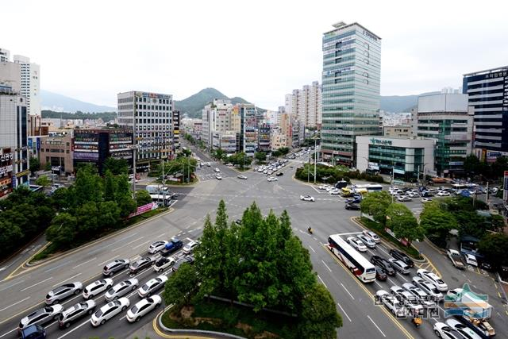
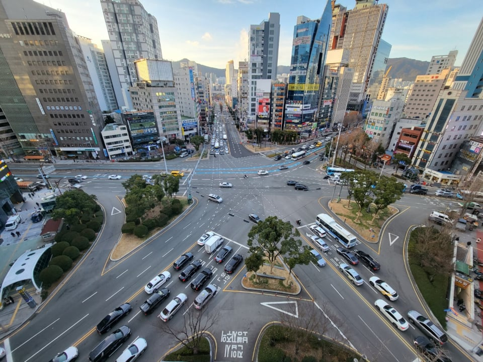

'연산로터리'


'연산로터리'
색깔별로 유도선 칠해놓으면 되지않나?
해놨음. 그래서 별로 안어렵고 연산로터리는 과거부터 그닥 안어려웠음
아니 씨발 놀리는거임? 아님 진짜임? 부산출장 가도 뱅기나 기차타고가서 ㄹㅇ 모름
당연히 구라지 세상에 저딴데가 어딨어
당연히 AI지 ㅋㅋㅋ 저런데가있겠냐
저기출퇴근시간 버스타고있으면 지나가는데 ㅈㄴ오래걸림
ㅋㅋ꼭 와라 두번 와라
저기랑 진양사거리 최악임…
반대로 첫빠면 두근두근함 꼬리물기 하는 차 참교육할 생각으로 때려박을 기세로 달려나가면 존나 동요하더라
안비키면어쩔껀데 ㅋㅋ
연산교차로는 그냥... 노답구간이야
울산 지인결혼식 가는데 무슨 로타리 존나큰거 들어갔는데 3바퀴돌고 겨우빠져나옴
태화일듯
한 열흘 가면 이해됨
근데 저중에 죽어도 안가는곳이 한곳 있는데 거기 가면 또 한 사나흘 가야됨 ㅋㅋ
악마 소환하는곳인가??
저기는 저 근처에 살았던 나도 짜릿한 곳임
근데 숲이 많네 공원이 많나보다
국토연성진이 있어요
6거리ㅋㅋ
사실 이런곳보단 가다보면 좌회전 전용이되는 1차로
지금 이 차선으로 안가면 못가는 길
이런게 문제임 존나많음
아는 사람들은 가는데 모르는 사람들은 갑자기 끼어들게되고 가만히 줄서있던 사람들은 새치기같아서 안끼워주고
그리고 단축을 위해 터널 뚫었는데
터널 나오면 바로 합류 분기가 있어서 길이 엉킨다던지
터널출구가 교차로라서 신호받고 나가야해서 터널입구부터 줄서야하는 터널
그래서 단축을 위해 뚫었지만 원래 가던길로 가세요 하고 시에서 권유하는 멍청이같은 터널
신호받고 교차로 건너니 고가도로 다리앞이라 급하게 차선바꿔야하는 곳
이런곳들이 있음
‘3차로에서 2차로 타고 있으면 버스전용차로입갤‘
당해봄 ㅅㅂ
내가 진짜 수많은 길을 봐오면서 어지간한 길은 허허 시발새끼들 하며 넘어갈수 있는데 진짜 거기만큼은 아직까지도 분노를 금할수 없다
로컬들만아는길 존나많음 ㅋㅋ
예전처럼 번호판에 지역명 붙였으면좋겠음
나 진짜 길몰라서 이렇게 된건데 사람들이 얌체로봐서 존나 억울함 ㅋㅋㅋㅋ
15년전 면허 처음따고 하단오거리에서 역주행했던 기억 아직도 잊혀지지 않는다
차 유도선만 있어도 식별하기 쉬운데
1 2 3차선 다 가는길이 다름ㅋㅋ 돌아버림
☆모양 도로 이쁘네 히히
초행길 사람들은 죽음의 이지 선다 ㅋㅋ 틀리면 다시 유턴해서 다시 왔던길로
예전엔 ㅎ회전교차로였음
울산 공업탑로터리도 개병신같았는데 없앤다고 듣고 이직해서 안가봄. 울산 도로 계획 개븅신이라서 남구 산업로에서 퇴근끝나고 울산역까지 가는데 한시간 넘게 걸림 개씹창 허벌애미 도로망 시발
1차선은 9시방향 2차선은 11시방향 3차선은 1시방향 4차선은 2시방향 이거맞음??
하단 쪽 교차로도 진짜 개지랄이던데 지하철 공사할땐 더지옥이었음
저정도는 서울에도 영등포 로터리선에서 정리될듯
사실 별로 헷갈림
아무리봐도 저긴 그냥 로터리를 유지했어야 하는 곳 같은데
매주 주말마다 안락교차로쪽 하마정쪽 왕복으로 다니고 있음
시청에서 교대방향, 안락교차로로 향하는 도로가
버스전용차로- 교대-교대-안락교차로-안락교차로or토곡 이렇게 되어있는데
3차선에서 4차선으로 쳐 끼어드는 차들땜에 존내 막힘
어쩔 수 없이 넣어주기는 하는데 거의 90프로는 신호 거의 다와서 끼어드는데 모친출타한 놈들임
영등포 로터리
연제경찰서 의경출신인데
추석인가설날인가 연산로타리에서 꼬리끊기 교통근무했는데 그날 사고 3건남 ㅅㅂ
올 여름에 차로 전국일주 하면서 부산 갔는데
생각보다 운전 다들 깔끔함
아니 오히려 서울보다 훨씬 운전잘하고 양보도 잘해줌
걍 도로가 개 씹창이라 그런게 아닐까 생각들더라
뭔 대낮에 네비 들으면서도 두시방향 좌회전이랬나 뭔 유도선 딸랑 그려놓고ㅅㅂ 눈치껏 들어갔는데 바로 옆차선이얶으면 나도 역주행남으로 유투부 나올뻔함
유도선 봐도 헷갈리것다